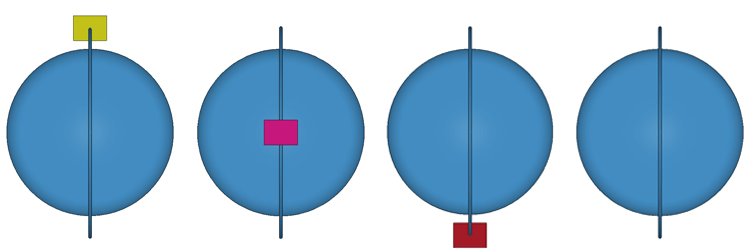

| We will now move away from earth´s surface and to orbital heights. Just outside the Earth´s atmosphere (extraterrestrial irradiance) the solar radiation is about 1350 W/m2. That means approximately 25% of the radiation gets reflected/absorbed by the Earth´s atmosphere and only 1000 W/m2 is incident at surface of earth. A satellite in orbit is exposed to extraterrestrial irradiance of 1350 W/m2 | ||||||||||||||||||||||||||||||||||||||||||||||||||||||||||||||||||||||
| Having understood the radiation incident on a single plate, let us now move to the case of a satellite. A cuboid satellite is nothing but collection of 6 plates that form its 6 faces. We need to figure out radiation incident on each side independently. For this we need to understand a bit about orbits. | ||||||||||||||||||||||||||||||||||||||||||||||||||||||||||||||||||||||
We will first concern ourselves with sun-synchronous (polar) orbits. Pratham will be in one such orbit. Let us simplify things a bit and consider earth´s orbit around sun to be circular (actual orbit has very low eccentricity). Figure 3 shows earth´s orbital plane around the sun and also shows one sun-synchronous orbit. sun-synchronous orbits are normal to earth´s orbital plane around the sun.
A family of such orbits are possible and we need a method to parametrise them. Consider the plane normal to earth´s orbital plane that contains the line joining sun & earth (let us call this as Earth-Sun-Plane, ´ES-Plane´ in short. Angle between this ES-Plane and satellite orbital plane can be useful parameter. |
||||||||||||||||||||||||||||||||||||||||||||||||||||||||||||||||||||||
| When the angle between satellite orbital plane and ES-Plane is zero we have one sun-synchronous orbit. This orbit is called 12:00 AM/12:00 PM orbit, Name suggests that when in this orbit the satellite will be overhead (ie at the same longitude as any observer on earth) at local noon 12:00 AM or local mid-night 12:00 PM. | ||||||||||||||||||||||||||||||||||||||||||||||||||||||||||||||||||||||
| When the angle between satellite orbital plane and ES-Plane is 90 degrees we have aonther sun-synchronous orbit. This orbit is called 06:00 AM/06:00 PM orbit, Name suggests that when in this orbit the satellite will be overhead (ie at the same longitude as any observer on earth) at local noon 06:00 AM or local mid-night 06:00 PM. | ||||||||||||||||||||||||||||||||||||||||||||||||||||||||||||||||||||||
|
||||||||||||||||||||||||||||||||||||||||||||||||||||||||||||||||||||||
| You can now visualize any other ab:cd AM⁄ab:cd PM orbit. | ||||||||||||||||||||||||||||||||||||||||||||||||||||||||||||||||||||||
| One advantage with such an orbit is that the orbit is directly overhead each day at the same local time. Observations made by the satellite can be of special use because of this time synchronization. | ||||||||||||||||||||||||||||||||||||||||||||||||||||||||||||||||||||||
| Now that you have understood the geometry of the sun-synchronous orbits, did you notice a tiny box seen in figures 3 and 4? Well, that is a satellite in that orbit. We now need to understand what happens to six sides of a satellite in a sun-synchronous orbit. | ||||||||||||||||||||||||||||||||||||||||||||||||||||||||||||||||||||||
| Any satellite will have a payload (assume it to be a camera) which will be mounted on one particular side of the satellite. The satellite will then have to point that particular side towards the earth. This will be accomplished by a control system on the satellite. This side is called nadir side. The side opposite to nadir side is the zenith side and always points away from earth. The side that advances (ie. facing the direction of the orbital motion) is the leading side and the side opposite to that is the lagging side. Two sides remain to be named now. All orbits except the 12:00AM/12:00PM will have one of these two sides always exposed to the sun which is called sun side. The side opposite to sun side is called anti-sun side. For the 12:00AM/12:00PM orbits both these sides (sun side and anti-sun side) will not receive any radiation. Colour coding used in the figures 5,6 and 7 to show various sides is as follows. |
||||||||||||||||||||||||||||||||||||||||||||||||||||||||||||||||||||||
|
||||||||||||||||||||||||||||||||||||||||||||||||||||||||||||||||||||||
| Consider the 12:00 noon orbit. This orbit is in the ES-plane, and we assign to it Ψ = 0 (ie. Ψ is the angle the satellite orbit makes with ES-plane). Satellite goes around the earth once in time interval T (which is the period of the satellite). Let us use η to designate the position of the satellite in the orbit, where η goes from 0 degrees to 360 degrees  | ||||||||||||||||||||||||||||||||||||||||||||||||||||||||||||||||||||||
Table below captures all of the above, where shaded cells indicate ‘no radiation’. |
||||||||||||||||||||||||||||||||||||||||||||||||||||||||||||||||||||||
|
||||||||||||||||||||||||||||||||||||||||||||||||||||||||||||||||||||||
| The 06:00 AM orbit is orthogonal to ES-plane. For this orbit ψ = -90. The orbit never experiences eclipsing and for all times presents its sun-side to the sun. Anti-sun side is at the rear and blocked by the satellite and all other sides are at 90 degrees. Table below captures this. | ||||||||||||||||||||||||||||||||||||||||||||||||||||||||||||||||||||||
|
||||||||||||||||||||||||||||||||||||||||||||||||||||||||||||||||||||||
|
We can now predict the orientation of all 6 sides of a satellite at any position in its orbit for any sun-synchronous orbit; ie. for any 0 < η < 360 and -90 < ψ < 90. The ‘Cos θ’ to be used in the cosine law for each of the six sides is given below in terms of η and ψ. (note : if the value is negative then that side does not receive any radiation). | ||||||||||||||||||||||||||||||||||||||||||||||||||||||||||||||||||||||
Here is how to calculate ψ and η for a particular a:bAM/a:bPM orbit at a given time.
We may now check if values of ψ are correct for 4 orbits shown in one of the figures above.
Nadir side, Cos θ = -sin η cos ψ Leading side, Cos θ = cos η cos ψ Lagging side, Cos θ = -cos η cos ψ Sun side side, Cos θ = sin ψ Anti sun side, Cos θ = -sin ψ It must be noted that for 180 < η < 360 the satellite is eclipsed except for ψ ± 90. We have shown you many figures of Sun, Earth, Earth’s orbit around Sun, satellite, satellite’s orbit around Earth, etc. Hope you have noticed that these are not to scale. So, avoid forming a mental picture of relative sizes of these entities based on these figures. In explaining the solar radiation received by the satellite we have neglected the height of satellite above earth. We implied that for 0 < η < 180 the satellite will be in sunlight and for 180 < η < 360 it will be eclipsed. There will be small deviations in η values at which these phases happen. You can appreciate this using simple geometry. |
||||||||||||||||||||||||||||||||||||||||||||||||||||||||||||||||||||||